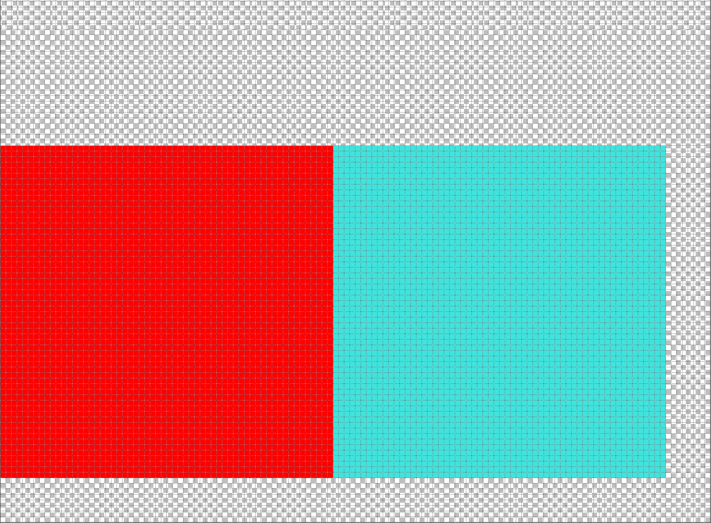
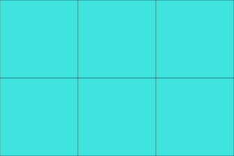
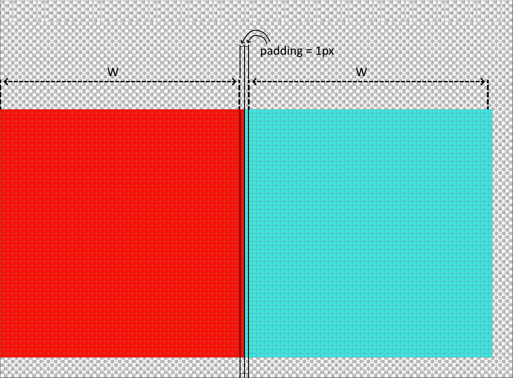

When the engine renders a scene it uses texture filtering to smooth transition between texels when it's magnified or minified. If textures lie right next to each other in a texture atlas then edge texels of the texture will blend into neighbor textures' texels causing such artifacts as seams on a tiled surface. In order to avoid the most common artifact AtlasItemPadding cooking rule is set to 1 pixel by default. AtlasItemPadding cooking rule adds spacing between textures in atlas and fills it with edge pixels.
Consider this example. Surface is tiled with teal squares. Teal square is packed with other textures with zero padding. That'll introduce visual artifacts for sure:

atlas

tiled surface
However AtlasItemPadding set to 1 solves visual artifacts problem:

atlas
tiled surface
But this may be not enough. Texture compression can lead to texture bleeding inside atlas:
atlas
tiled surface
Correct way to solve compression bleeding is to increase value of AtlasItemPadding so it matches the size of compression block. For example compression block of ETC2 algorithm have 4x4 size, so in most cases 4 pixels should be enough for AtlasItemPadding to resolve compression bleeding problem: